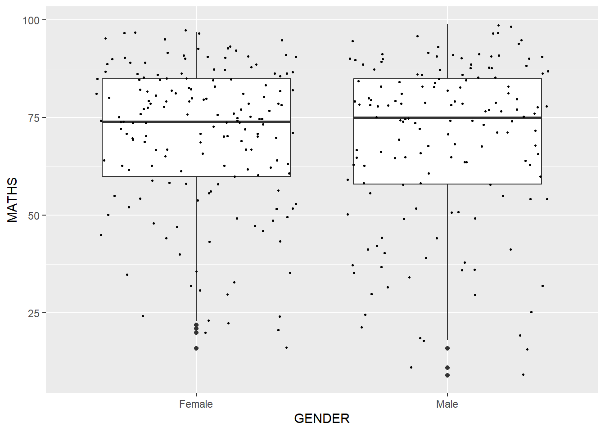

pacman::p_load(tidyverse)Hands-On Exercise 1: A Layered Grammar of Graphics: ggplot2 methods
Learning Objectives
In this hands-on exercise, I will be exploring the fundamental principles and key components of ggplot2, gaining experience in creating statistical graphics using the Layered Grammar of Graphics. By the end, I’ll be adept at employing ggplot2’s graphical elements to produce elegant and functional statistical visuals.
Getting Started
Installing and importing R packages
Before diving into the code below, it is crucial to ensure that the necessary R packages are installed. The code chunk below utilizes the ‘p_load()’ function from the pacman package to check if tidyverse packages are installed in the computer. If they are, then they will be imported into R.
Importing the data
The provided code utilizes the read_csv() function from the readr package within the tidyverse to import the “exam_data.csv” file into the R environment.
This dataset comprises examination scores of 3rd grade students. It encompasses seven categorical and continuous attributes, with ID, CLASS, GENDER, and RACE being categorical, while MATHS, ENGLISH, and SCIENCE are continuous.
This dataset offers insights into the academic performance of students, allowing for the exploration of patterns and relationships between various attributes.
exam_data <- read_csv("data/Exam_data.csv", show_col_types = FALSE)Note:
- Without ‘show_col_types = FALSE’, the message below will be shown

Introduction of ggplot
ggplot2 is an R package designed for the creation of data-driven graphics through the principles outlined in The Grammar of Graphics. This package, belonging to the tidyverse family, is specifically tailored for visual exploration and effective communication of data insights. Its declarative approach allows users to construct graphics with ease, making it a valuable tool for data visualization in R. ggplot2 link provides additional information regarding this.
R Graphics VS ggplot
I will be comparing how R Graphics, the core graphical functions of Base R and ggplot can create a simple histogram.
hist(exam_data$MATHS)
ggplot(data=exam_data, aes(x = MATHS)) +
geom_histogram(bins=10,
boundary = 100,
color="black",
fill="grey") +
ggtitle("Distribution of Maths scores")
While R Graphics may simplify the code, ggplot2 is recommended for its flexibility, clarity, and efficiency in creating sophisticated graphics. With a layered approach and intuitive syntax based on The Grammar of Graphics, ggplot2 allows for easier customization and a more concise way to build visuals, making it a preferred choice for efficient data visualization in R.
As mentioned by Hadley Wickham, “The transferable skills from ggplot2 are not the idiosyncrasies of plotting syntax, but a powerful way of thinking about visualization, as a way of mapping between variables and the visual properties of geometric objects that you can perceive.”
Grammar of Graphics
Understanding ggplot2 requires grasping the principles of the Grammar of Graphics. Introduced by Leland Wilkinson in 1999, this framework breaks down graphs into semantic components like scales and layers. Essentially, it guides the structuring of mathematical and aesthetic elements to create meaningful graphs.
Two key principles include:
1) Graphics involve distinct layers of grammatical elements, and
2) Meaningful plots are achieved through aesthetic mapping.
This provides insights into complex graphics, revealing unexpected connections. While it sets a foundation for well-formed graphics, there can still be grammatically correct but nonsensical visuals.
A Layered Grammar of Graphics
ggplot2 is an implementation of Leland Wilkinson’s Grammar of Graphics. The seven grammars of ggplot2 are shown in the figure below.

Reference: Hadley Wickham (2010) "A layered grammar of graphics." Journal of Computational and Graphical Statistics, vol. 19, no. 1, pp. 3–28.
A short description of each building block are as follows:
Data: The dataset being plotted.
Aesthetics take attributes of the data and use them to influence visual characteristics, such as position, colors, size, shape, or transparency.
Geometries: The visual elements used for our data, such as point, bar or line.
Facets split the data into subsets to create multiple variations of the same graph (paneling, multiple plots).
Statistics: statistical transformations that summarizes data (e.g. mean, confidence intervals).
Coordinate systems define the plane on which data are mapped on the graphic.
Themes modify all non-data components of a plot, such as main title, sub-title, y-axis title, or legend background.
Essential Grammatical Elements in ggplot2: data
ggplot(data=exam_data)
Notes:
A blank canvas appears.
ggplot() initializes a ggplot object.
The data argument defines the dataset to be used for plotting.
If the dataset is not already a data.frame, it will be converted to one by fortify().
Essential Grammatical Elements in ggplot2: Aesthetic mappings
Aesthetic mappings in ggplot2 involve linking data attributes to visual characteristics like position, color, size, shape, or transparency. The aes() function is used to specify all aesthetics in a plot. In subsequent lessons, you’ll discover that each geom layer can have its unique aes specification.
The code chunk below adds the aesthetic element into the plot.
ggplot(data=exam_data,
aes(x= MATHS))
Note:
- ggplot includes the x-axis and the axis’s label.
Essential Grammatical Elements in ggplot2: geom
Geometric objects are the actual marks we put on a plot. Examples include:
geom_point for drawing individual points (e.g., a scatter plot)
geom_line for drawing lines (e.g., for a line charts)
geom_smooth for drawing smoothed lines (e.g., for simple trends or approximations)
geom_bar for drawing bars (e.g., for bar charts)
geom_histogram for drawing binned values (e.g. a histogram)
geom_polygon for drawing arbitrary shapes
geom_map for drawing polygons in the shape of a map, access the data to use for these maps by using the map_data() function

A plot must have at least one geom; there is no upper limit. You can add a geom to a plot using the + operator.
For complete list, please refer to here.
Geometric Objects: geom_bar
ggplot(data=exam_data,
aes(x=RACE)) +
geom_bar()
Geometric Objects: geom_dotplot
In a dot plot, the dot’s width corresponds to the bin width (or maximum width, depending on the binning algorithm), and the dots are stacked, with each dot symbolizing a single observation.
ggplot(data=exam_data,
aes(x = MATHS)) +
geom_dotplot(dotsize = 0.5)Bin width defaults to 1/30 of the range of the data. Pick better value with
`binwidth`.
Note:
- The y scale is not very useful, in fact it is very misleading.
The code chunk below performs the following two steps:
scale_y_continuous() is used to turn off the y-axis, and
binwidth argument is used to change the binwidth to 2.5.
ggplot(data=exam_data,
aes(x = MATHS)) +
geom_dotplot(binwidth=2.5,
dotsize = 0.5) +
scale_y_continuous(NULL,
breaks = NULL) 
Geometric Objects: geom_histogram()
The below code is to create a simple histogram by using values in MATHS field of exam_data.
ggplot(data=exam_data,
aes(x = MATHS)) +
geom_histogram() `stat_bin()` using `bins = 30`. Pick better value with `binwidth`.
Note:
- Note that the default bin is 30.
Modifying a geometric object by changing geom()
ggplot(data=exam_data,
aes(x= MATHS)) +
geom_histogram(bins=20,
color="black",
fill="light blue")
Notes:
bins argument is used to change the number of bins to 20,
fill argument is used to shade the histogram with light blue color, and
color argument is used to change the outline color of the bars in black
Modifying a geometric object by changing aes()
ggplot(data=exam_data,
aes(x= MATHS,
fill = GENDER)) +
geom_histogram(bins=20,
color="grey30")
Note:
- This approach can be used to color, fill and alpha of the geometric.
Geometric Objects: geom-density()
The geom-density() function calculates and displays a kernel density estimate, offering a smoothed version of a histogram. This method serves as a valuable alternative to histograms, particularly for continuous data originating from a smooth underlying distribution.
The code below plots the distribution of Maths scores in a kernel density estimate plot.
ggplot(data=exam_data,
aes(x = MATHS)) +
geom_density() 
The code chunk below plots two kernel density lines by using colour or fill arguments of aes()
ggplot(data=exam_data,
aes(x = MATHS,
colour = GENDER)) +
geom_density()
Geometric Objects: geom_boxplot
The geom_boxplot() function presents a visual representation of a continuous value list. It depicts five summary statistics, including the median, two hinges, and two whiskers, while also showing individual “outlying” points separately.
ggplot(data=exam_data,
aes(y = MATHS,
x= GENDER)) +
geom_boxplot() 
Notches in box plots aid in visually assessing potential differences in distribution medians. If the notches do not overlap, it indicates evidence of differing medians.
The following code segment generates a notched plot instead of a box plot, illustrating the distribution of Math scores based on gender.
ggplot(data=exam_data,
aes(y = MATHS,
x= GENDER)) +
geom_boxplot(notch=TRUE)
Geometric Objects: geom_violin
The geom_violin function is specifically crafted for constructing violin plots, a method used to compare multiple data distributions. Traditional density curves face challenges when comparing numerous distributions, as their lines visually overlap. Violin plots address this issue by arranging several distributions side by side, facilitating easier comparison.
The provided code illustrates the creation of a violin plot depicting the distribution of Math scores categorized by gender.
ggplot(data=exam_data,
aes(y = MATHS,
x= GENDER)) +
geom_violin()
Geometric Objects: geom_point()
geom_point() is especially useful for creating scatterplot.
ggplot(data=exam_data,
aes(x= MATHS,
y=ENGLISH)) +
geom_point() 
geom objects can be combined
ggplot(data=exam_data,
aes(y = MATHS,
x= GENDER)) +
geom_boxplot() +
geom_point(position="jitter",
size = 0.5) 
Essential Grammatical Elements in ggplot2: stat
The Statistics functions statistically transform data, usually as some form of summary. For example:
frequency of values of a variable (bar graph)
a mean
a confidence limit
There are two ways to use these functions:
add a stat_() function and override the default geom, or
add a geom_() function and override the default stat.
Working with stat()
The boxplots below are incomplete because the positions of the means were not shown.
ggplot(data=exam_data,
aes(y = MATHS, x= GENDER)) +
geom_boxplot()
Working with stat - the stat_summary() method
ggplot(data=exam_data,
aes(y = MATHS, x= GENDER)) +
geom_boxplot() +
stat_summary(geom = "point",
fun.y="mean",
colour ="red",
size=4) Warning: The `fun.y` argument of `stat_summary()` is deprecated as of ggplot2 3.3.0.
ℹ Please use the `fun` argument instead.
Working with stat - the geom() method
ggplot(data=exam_data,
aes(y = MATHS, x= GENDER)) +
geom_boxplot() +
geom_point(stat="summary",
fun.y="mean",
colour ="red",
size=4) Warning in geom_point(stat = "summary", fun.y = "mean", colour = "red", :
Ignoring unknown parameters: `fun.y`No summary function supplied, defaulting to `mean_se()`
Adding a best fit curve on a scatterplot?
The relationship of Maths and English grades of pupils are shown in the scatterplot below. A best fit curve can be added to improve the interpretability of this graph.

We can use geom_smooth() is used to plot a best fit curve on the scatterplot.
ggplot(data=exam_data,
aes(x= MATHS, y=ENGLISH)) +
geom_point() +
geom_smooth(size=0.5)Warning: Using `size` aesthetic for lines was deprecated in ggplot2 3.4.0.
ℹ Please use `linewidth` instead.`geom_smooth()` using method = 'loess' and formula = 'y ~ x'
Note:
- The default method used is loss.
The default smoothing method can be overridden with the code below.
ggplot(data=exam_data,
aes(x= MATHS,
y=ENGLISH)) +
geom_point() +
geom_smooth(method=lm,
size=0.5)`geom_smooth()` using formula = 'y ~ x'
Essential Grammatical Elements in ggplot2: Facets
Faceting produces small multiples, also known as trellis plots, where each subset of the data is displayed in a separate plot. This serves as an alternative to using aesthetics to represent additional discrete variables. In ggplot2, there are two types of faceting: facet_grid() and facet_wrap().
Working with facet_wrap()
facet_wrap organizes a one-dimensional sequence of panels into a two-dimensional layout, which is often more efficient in utilizing screen space compared to facet_grid. This is particularly advantageous as most displays have a roughly rectangular shape. The provided code segment generates a trellis plot using facet_wrap().
ggplot(data=exam_data,
aes(x= MATHS)) +
geom_histogram(bins=20) +
facet_wrap(~ CLASS)
facet_grid() function
facet_grid() constructs a matrix of panels based on row and column faceting variables. This is particularly beneficial when dealing with two discrete variables, and all possible combinations of these variables are present in the dataset. The following code segment generates a trellis plot using facet_grid().
ggplot(data=exam_data,
aes(x= MATHS)) +
geom_histogram(bins=20) +
facet_grid(~ CLASS)
Essential Grammatical Elements in ggplot2: Coordinates
The Coordinates functions map the position of objects onto the plane of the plot. There are a number of different possible coordinate systems to use, they are:
[`coord_cartesian()`](https://ggplot2.tidyverse.org/reference/coord_cartesian.html): the default cartesian coordinate systems, where you specify x and y values (e.g. allows you to zoom in or out).
[`coord_flip()`](https://ggplot2.tidyverse.org/reference/coord_flip.html): a cartesian system with the x and y flipped.
[`coord_fixed()`](https://ggplot2.tidyverse.org/reference/coord_fixed.html): a cartesian system with a “fixed” aspect ratio (e.g. 1.78 for a “widescreen” plot).
[`coord_quickmap()`](https://ggplot2.tidyverse.org/reference/coord_map.html): a coordinate system that approximates a good aspect ratio for maps.
Working with Coordinate
By the default, the bar chart of ggplot2 is in vertical form.
ggplot(data=exam_data,
aes(x=RACE)) +
geom_bar()
coord_flip() flips the horizontal bar chart into vertical bar chart.
ggplot(data=exam_data,
aes(x=RACE)) +
geom_bar() +
coord_flip()
Changing the y- and x-axis range
The scatterplot on the right is slightly misleading because the y-aixs and x-axis range are not equal.
ggplot(data=exam_data,
aes(x= MATHS, y=ENGLISH)) +
geom_point() +
geom_smooth(method=lm, size=0.5)`geom_smooth()` using formula = 'y ~ x'
The code chunk below fixed both the y-axis and x-axis range from 0-100.
ggplot(data=exam_data,
aes(x= MATHS, y=ENGLISH)) +
geom_point() +
geom_smooth(method=lm,
size=0.5) +
coord_cartesian(xlim=c(0,100),
ylim=c(0,100))`geom_smooth()` using formula = 'y ~ x'
Essential Grammatical Elements in ggplot2: themes
Themes control elements of the graph not related to the data, such as:
background colour
size of fonts
gridlines
colour of labels
Built-in themes include:
theme_gray() (default)
theme_bw()
theme_classic()
A list of theme can be found at this link. Each theme element can be conceived of as either a line (e.g. x-axis), a rectangle (e.g. graph background), or text (e.g. axis title).
Working with theme
theme_gray():
ggplot(data=exam_data,
aes(x=RACE)) +
geom_bar() +
coord_flip() +
theme_gray()
theme_classic():
ggplot(data=exam_data,
aes(x=RACE)) +
geom_bar() +
coord_flip() +
theme_classic()
theme_minimal():
ggplot(data=exam_data,
aes(x=RACE)) +
geom_bar() +
coord_flip() +
theme_minimal()
References
Hadley Wickham (2023) ggplot2: Elegant Graphics for Data Analysis. Online 3rd edition.
Winston Chang (2013) R Graphics Cookbook 2nd edition. Online version.
Healy, Kieran (2019) Data Visualization: A practical introduction. Online version.